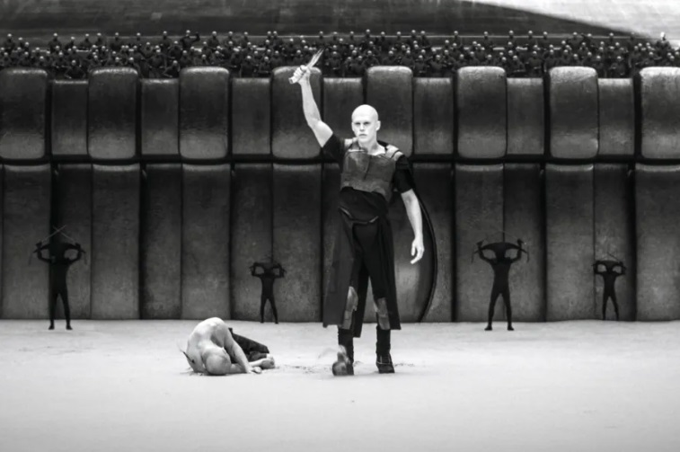

The Music
Hans Zimmer did not have to go as hard as he did on this soundtrack.
But he did.
John Williams? Howard Shore? They wish they were ol' Hans.

"The first movie is a preamble. The first movie came out and I just carried on writing, and I got a phone call from Denis. He said, “The movie has been out for six months, you can stop.” And I told him, “No, no, no, you don’t understand, I’m writing because I know that we will be greenlit for “Part Two.” And secondly, I think it’d be good for me to carry on writing and maybe inspire you with some things.”"
Zimmer cites all of the amazing musicians as the reason the Dune soundtracks are so amazing. Musicians like Pedro Eustache (above) who played the chromatic dukduk he created in order to play one of the main themes from Dune
Or Tina Guo (below) electric cellist who threw her whole ass into slamming out some of the most haunting music of the score. Electric instruments being acoustically recorded played a huge role in creating the sound of Dune.
The Cast
The casting for Dune: Part Two (2024) is truly immaculate. The only way they could have cast it better would be if the characters were actually real.
A perfect example is the casting of Javier Bardem as the enigmatic (and lets not kid ourselves here, incredibly attractive) leader of Seitch Tabr, Stilgar.
The casting of Timothée Chalamet as Paul Muad'Dib Usul Atreides and Josh Brolin as the warrior bard Gurney Halleck, was another stroke of genius. They both embody their characters beautifully and bring so much life to the story.
And Rebecca Ferguson as the Reverend Mother, Bene Gesserit witch, and mother to the prophet Muad'Dib, Lady Jessica, brings so much to the character. She makes you trust her, hate her, and pity her all in the same scene.

The Color Grading
Cinematographer Greig Fraser and colorist Dave Cole, captured the essence of the desert planet Arrakis with distinctive color grading.
"...utilized a hybrid approach, combining analog and digital methodologies to achieve its grounded, yet not nostalgic, look. The film was captured digitally, then printed onto 35mm negative using Vision3 film, which was not the typical 5219 film stock. This process contributed to the film’s muted, yet not desaturated appearance, a key characteristic of its visual identity."
Fun Fact: Infrared technology was used in the filming of Feyd-Rautha's birthday battle on Giedi-Prime to achieve the otherworldly quality to the Harkonnen home world.
Filming Locations of Dune: Part Two
| Dune Location | Real World Location |
|---|---|
| The landscapes of Arrakis | Abu Dhabi, United Arab Emirates and Wai Rum, Jordan |
| The interior of the Corrino household | Altivole, Treviso, Italy |
Quotes from Dune: Part Two
"Lisan Al-Gaib!"
- Religious Fremen
"The Holy War begins."
-Lady Jessica, Reverend Mother
"My present keeps a company of shit The mindless droning on of spit. Give me words, come grass and grain Do away with these idiots I blame My stillsuit's full of piss, my ass caked in sand Save me from this devil's heat, another world, another land. Damn you fate that put me here, longing for what was once so dear Caladan is a vision renewed As I shrivel with this halfwit brood My stillsuit's full of piss, my ass caked in sand Save me from this devil's heat Another world, another land.”
-warrior poet, Gurney Halleck